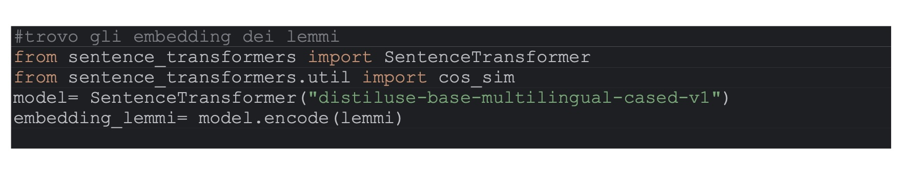

Per ottenere una rappresentazione numerica dei lemmi, ho utilizzato la libreria chiamata sentence_transformers, caricando il modello multilingue denominato "distiluse-base-multilingual-cased-v1". Questo modello genera, per ciascun lemma, un vettore numerico (embedding) che ne rappresenta il significato in uno spazio semantico.